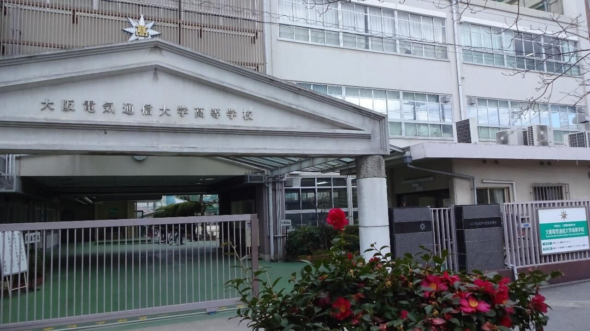
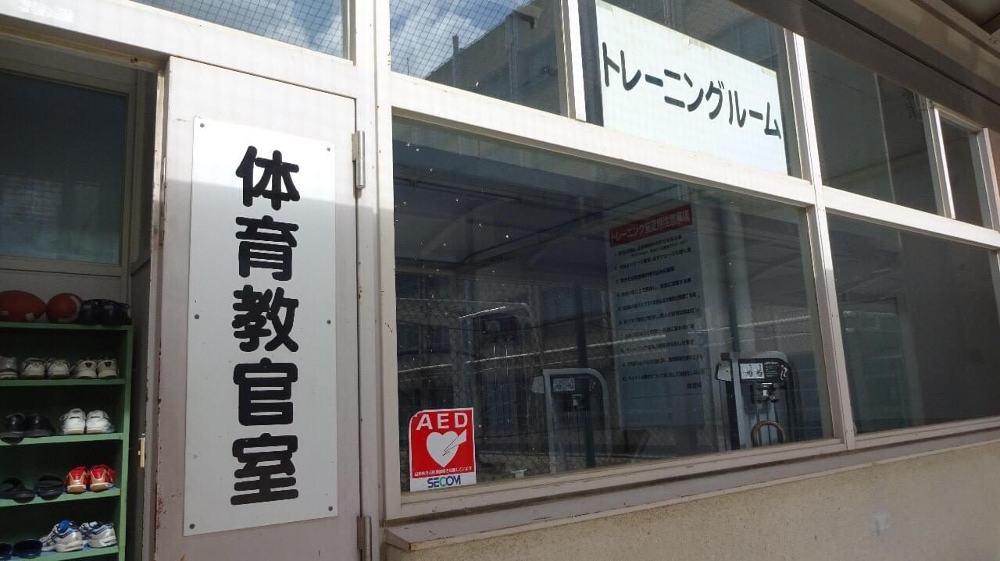
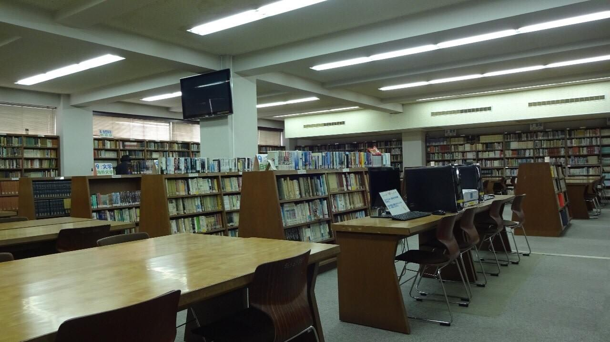
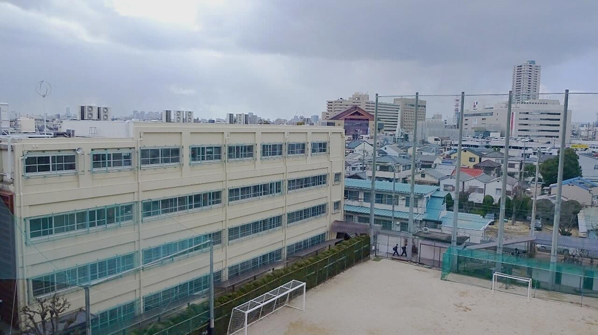

2025年高校文化祭
同窓会役員有志で文化祭を訪問。部活動展示や模擬店の様子を紹介します。
現行記事を見る
重要
2026年度総会は 5月16日（土） 開催予定です。受付期間は3月1日から4月14日です。
Annual meeting
現行サイトの案内を、スマートフォンでも迷わず読める形に整理しました。申込フォームの受付状態は本番公開前に再確認します。
News
同窓会活動と母校の近況を、読みやすい一覧として再構成します。
Documents
会報や議案書は、同窓会員が最も探しやすい場所にまとめます。本番版では共有ドライブ内の原本を確認して、最新版のみを掲載します。



About
大阪電気通信大学高等学校の卒業生、先生方、母校をつなぎ、総会・懇親会・学校行事支援を通じて交流の場をつくります。
年に一度の総会・懇親会を中心に、卒業生が再会できる場を整えます。
会報やお知らせを通じて、同窓会活動と母校の近況を分かりやすく届けます。
部活動や学校行事への応援を通じて、次の世代とのつながりを育てます。